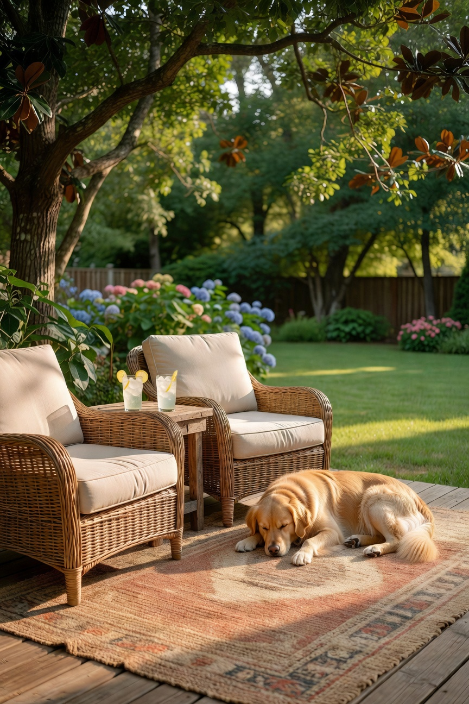
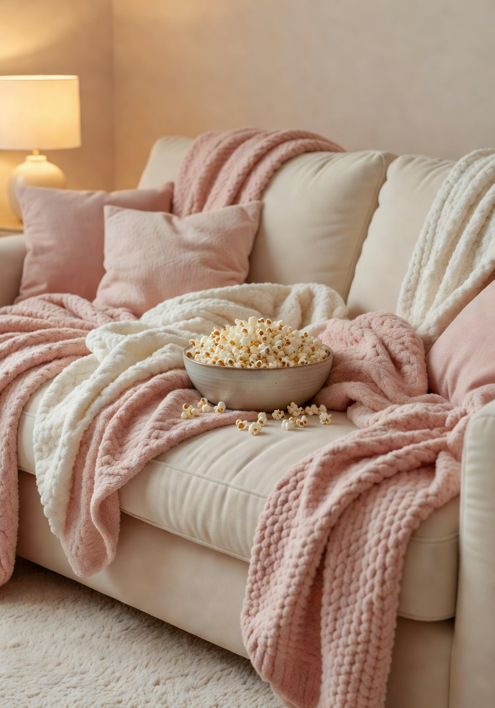
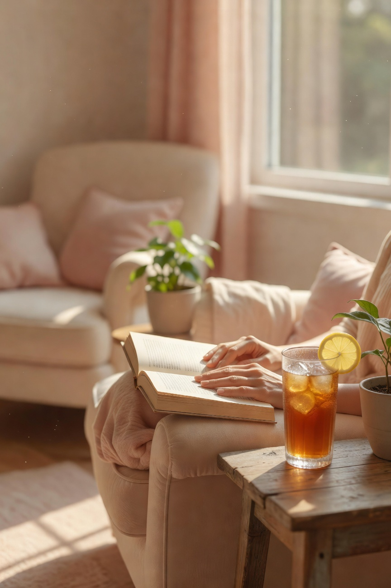
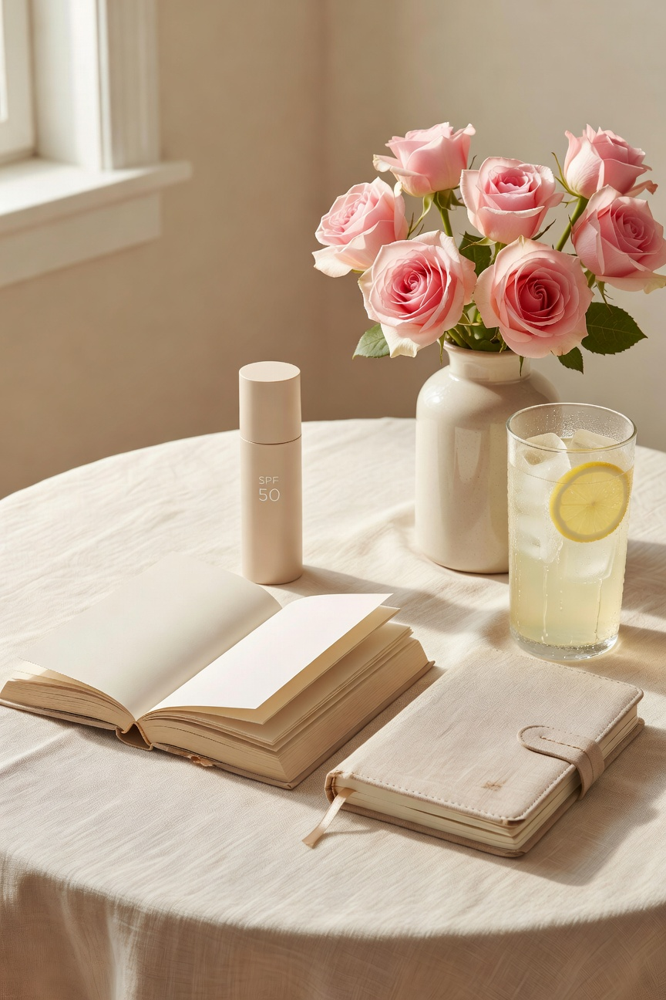

People always seem surprised when I tell them we do not really do big summer vacations every year. We do Disney when we can swing it, but for regular old summer? We are home people. We love being home. We are very, very good at it.
With three teenagers -- well, two teenagers and one college student who came back for the summer -- summer at our house means late mornings, backyard time, movie nights, and a whole lot of just being together without a schedule. I love every bit of it.
Here is what actually got used this season.
For the Backyard

We are not fancy backyard people. We have a patio, some chairs, a grill, and the determination to be outside as much as Arkansas summers allow -- which, if you have never experienced Arkansas in July, is less than you would think. The humidity is its own creature.
What actually gets used out there: comfortable outdoor chairs that hold up through Arkansas summers, a patio umbrella that actually stays put in the wind, and an outdoor rug that makes the whole space feel more like a room. Carmy supervises all backyard activities from his preferred spot in the shade. He takes this responsibility seriously.
The key to surviving an Arkansas summer outside is honestly just leaning into it -- cold drinks, good shade, and accepting that you are going to go back inside by two in the afternoon. We have made peace with this system and it works well for us.
For Movie Nights

Friday night is movie night and has been for years. Even now that the kids are older they still show up for it, which means everything to me. We rotate who picks and nobody is allowed to complain. Those are the rules.
Good blankets, good snacks, a couch that fits everyone. That is the movie night formula and it has never failed us. I have a soft throw blanket situation in our living room that has gotten slightly out of control and I endorse it completely.
Summer movie nights have an added bonus -- no school the next morning, which means we can actually watch something longer than ninety minutes without somebody falling asleep. We worked through an entire series this June and I am not a little proud of that.
For Me

Summer is the only time I truly decompress from the school year. I read more, sleep a little later, and tackle the projects I have been filing away all year. This summer I finally organized the garage properly and I am not done being pleased about it.
I also read more books in June than I typically manage in three months during the school year. This is not a brag -- this is a confession about how little time teachers actually have for themselves during the year. Summer reading is a genuine act of self-care for me and I protect it.
My reading chair, my iced sweet tea, and whatever I have going on my nightstand is genuinely my favorite summer situation. Simple, free, and restorative in a way that nothing else quite matches.

More summer content coming. I have finds to share and a porch to enjoy. If you are a fellow homebody soaking up every last bit of this season, you are my people.
-- Christin Marie